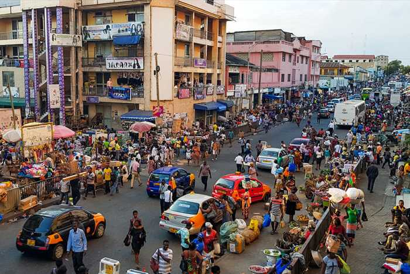

It can be difficult to identify trafficking victims.
The key signs to look out for are:
- People in very difficult or dangerous working conditions
- And away from home
Typically, victims are forced into sexual servitude - or made to work in extremely poor conditions.
As illustrated below, the fishing sector is the most well known area of the economy where there are ongoing reports of trafficking - both of children made to work, and then women trafficked to serve fishermen as domestic or sexual workers.
This means faith leaders familiar with their congregants’ lives are well placed to identify real victims.
Case study
This case study charts a typical example of domestic trafficking. It involves the exploitation of a young girl from the north who was forced to work in Accra as a domestic worker, in intolerable conditions.
The case study shows how family networks can overlap with trafficking networks. The case study also shows how everyday domestic situations – as opposed to more obvious examples of organised trafficking – can mask what is criminal abuse in terms of Ghana’s trafficking legislation
- At the age of 13, Kay’s parents arranged for her to be a domestic worker with a family in Accra.Her parents lined up the job through a broker called “Aunty Aba”, who in turn used another broker, “Sister Evelyn.”
- Once in Accra, Kay was mistreated consistently, and beaten regularly.
- Kay said she told her mother she would continue her education at school in Accra, and that everything would be OK.
- But far from being treated well, she was subjected to cruel treatment on a regular basis, and beaten for the slightest reason.
- Kay said: “Sometimes when I do something bad, then the madam will slap me [crying]. If she sends me, and I come back and I don’t bring the right thing, she slaps me... There was a day I went to bath, when I finished bathing, there was blood in the bath and I didn’t know. She called me and ask why. By the time I explain, she slapped me.”
- Her family did not help her. If Kay complained to her employer’s husband, he would blame her. Her employer eventually asked Kay’s family to take her back.
- But Kay’s father didn’t rescue her. Instead, he pleaded with the family to keep Kay.
This case study is based on research published in the Journal of Ethnic and Migration Studies, vol. 45, no. 14 by Awumbila, M, Deshingkar, P, Kandilige, L, Kofi Teye, J & Setrana, M, – “Please, thank you and sorry – brokering migration and constructing identities for domestic work in Ghana”.